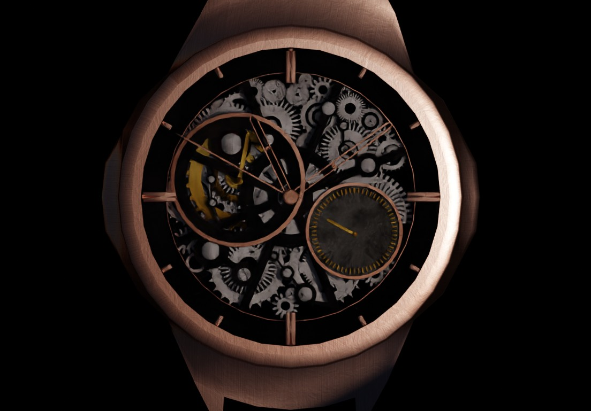
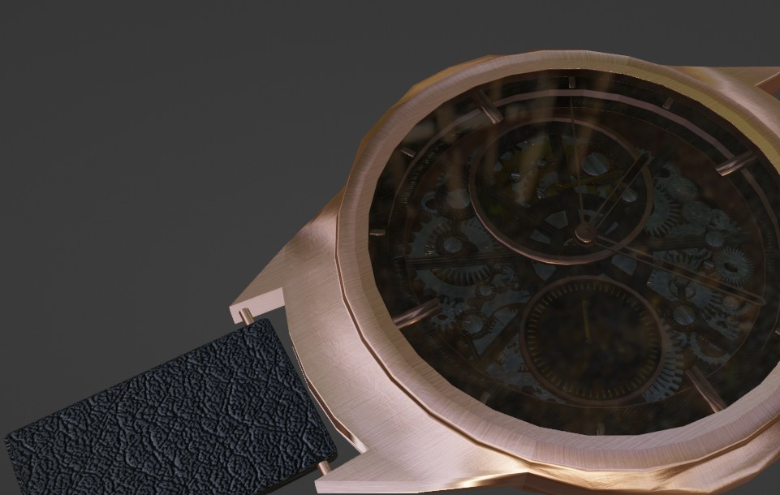

PRODUCT CG
時間を質感で語るプロダクト表現
CONCEPT
金属の冷たさ、ガラスの屈折、文字盤の微細な反射。 高級腕時計の空気感を CG で再現するために、 光と素材のバランスに重点を置きました。
TECHNIQUE
金属のノーマル、ラフネスの調整、ガラスの IOR 制御、 ベゼル反射の落ち方など、細部の素材感を研究しています。 ライティングは 3 点光をベースにしつつ、 リムライトで輪郭のコントラストを強調。
GALLERY

